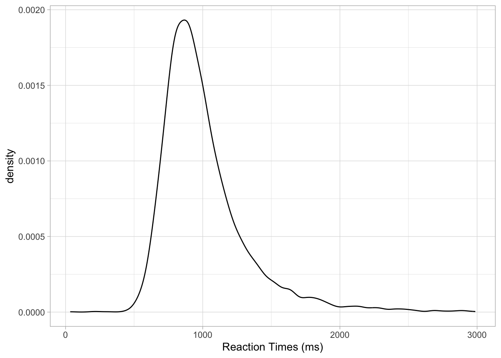

# First read the data
mald <- readRDS("data/tucker2019/mald_1_1.rds")
mald |>
ggplot(aes(RT)) +
geom_density() +
labs(x = "Reaction Times (ms)")



Probability as a discipline is the study of chance and uncertainty. It provides a systematic way to describe and reason about events whose outcomes cannot be predicted with certainty. In everyday life, probabilities are used to talk about situations ranging from rolling dice and drawing cards to forecasting the weather or assessing risks. A probability is expressed as a number between 0 and 1, where 0 means the event is impossible, 1 means it is certain, and values in between reflect varying degrees of probability. So for example if I say the probability of rain tomorrow is 0, it means that raining tomorrow is impossible. Conversely, if I say that the probability of rain tomorrow is 1, I mean that raining tomorrow is certain: it will happen. Probabilities are also expressed as percentages: so 0 is 0% and 1 is 100% percent. An 80% probability of rain tomorrow is a high probability, but not quite certainty. Thinking in terms of probability allows us to quantify uncertainty and to make informed statements about how likely different outcomes are, even when we cannot predict exactly what will happen.
The rules of probability ensure that these numbers behave consistently. The non-negativity rule states that no probability can be less than 0. The normalization rule requires that the probability of all possible outcomes of a situation must add up to exactly 1, which guarantees that something in the set of possible outcomes will happen. The addition rule tells us that if two events cannot both occur at the same time—such as rolling a 3 or rolling a 5 on a single die throw—the probability of either happening is the sum of their individual probabilities. The multiplication rule applies when two events are independent, meaning the outcome of one does not affect the other—for instance, tossing a coin and rolling a die. In that case, for example, the probability of getting heads and a 3 together is the product of their individual probabilities (i.e. the probability of getting heads, 1/2 or 0.5, and the probability of getting 3, 1/6 or 0.166): if we multiply 0.5 by 0.166, we get approximately 0.083. So there is an 8.3% probability of getting heads and a 3 when flipping a coin and rolling a die. These rules provide the logical foundation for reasoning about probabilities and serve as the basis for describing probability distributions, which organize and model probabilities across a whole set of possible outcomes. However, you will see that in practice you will rarely have to use them, yourself.

A probability distribution is a way of describing how probabilities are assigned to all possible outcomes of a random process. Conceptually, you can think of a probability distribution as a distribution of probabilities: i.e. a list of possible outcomes (values) and their probability. Instead of focusing on the probability of a single event (like getting a 4 on a die), a distribution gives the full picture: it tells us the probability of every possible value a random variable can take. For example, when rolling a fair six-sided die, the probability distribution assigns a probability of \(1/6\) to each face, reflecting that all outcomes (i.e. all numbers from 1 to 6) are equally likely. In other cases, probabilities may not be spread evenly, as with a biased coin or the distribution of heights in a population (there are more people of mean height that very short and very tall people). By summarizing the probability of all outcomes at once, probability distributions allow us to see patterns in a clear and structured way.
There are two broad types of probability distributions: discrete and continuous probability distributions. Discrete probability distributions apply to discrete variables, such as the result of a dice roll, the number of words known by an infant, or the accuracy of a response (correct vs incorrect). Here, probabilities are assigned to distinct values, and the total across all possible outcomes must equal 1. So, on a six-sided die, each outcome has a \(1/6\) (one in six) probability and since there are six outcomes, \(1/6 * 6 = 1\). Continuous probability distributions, on the other hand, are used when outcomes can take on any value within a range, such as height, reaction times, or phone duration. In these cases, probabilities are described by smooth curves rather than discrete points, and instead of assigning probability to individual values, we consider intervals, like for example, the probability that a person’s height lies between 160 cm and 170 cm (more on this in Section 19.2 below). Figure 18.1 shows an example of a categorical probability distribution (the probability of respondents answering “no” or “yes” in a survey) and a continuous probability distribution (the proportion of voicing during closure of a stop).
p <- 0.8
bernoulli_df <- tibble(
x = c("No", "Yes"),
probability = c(1 - p, p)
)
ggplot(bernoulli_df, aes(x = factor(x), y = 0 , yend = probability)) +
geom_segment(colour = "steelblue", linewidth = 2) +
geom_point(aes(y = probability), colour = "steelblue", size = 5) +
labs(x = element_blank(), y = "Probability") +
ylim(0, 1)
alpha <- 1.5
beta <- 4
beta_df <- tibble(
x = seq(0, 1, length.out = 100),
density = dbeta(x, alpha, beta)
)
ggplot(beta_df, aes(x = x, y = density)) +
geom_line(color = "darkorange", linewidth = 1.2) +
labs(x = "Proportion of voicing", y = "Density")
Several well-known distributions serve as fundamental building blocks in probability and statistics. Among discrete distributions, the binomial distribution describes the number of successes in a fixed number of independent trials (like accuracy data from a behavioural task), while the Poisson distribution is used for counting events that occur randomly over time or space (such as number of relatives sentences in a corpus). In the continuous case, the Gaussian distribution (which we will explore below) has many useful mathematical properties and it features prominently in any statistical textbook. Other continuous distributions are, for example, the beta distribution, illustrated in Figure 18.1 (b), used for continuous variables bounded between 0 and 1, and the uniform distribution, which distributes probabilities equally across the entire range of real numbers (so it is a “flat” distribution, since it looks like a horizontal line).
Probability distributions are more than just mathematical descriptions—they provide tools for making sense of variation and uncertainty in the world. They allow us to calculate probabilities for complex events, to compare different random processes, and to build models that reflect real-world randomness. Once the distribution of a random variable is known, we can derive useful summaries such as averages, variability, and the probability of extreme outcomes. In this way, probability distributions bridge the abstract rules of probability with the practical task of describing how probability operates across a whole set of possibilities.
How is the probability of different outcomes of ranges of outcomes calculated? For discrete distributions, the probability mass function (PMF) is used to compute probabilities. Let’s take the Bernoulli probability distribution from figure Figure 18.1 (a): the PMF of a Bernoulli distribution is \(p\) for the probability of the outcome being 1, and \(q = 1 - p\) for the probability of the outcome being 0. In the figure, 1 = “Yes” and 0 = “No”. There is a probability \(p = 0.8\) of getting a “Yes”, hence there is a probability \(q = 1 - p = 1- 0.8 = 0.2\) of getting a “No”. Continuous probability distributions use probability density functions (PDFs, nothing to do with the file format): these don’t tell you the probability of a specific value, but rather the probability density or in other words how dense the probability is around a point. I will spare you the mathematical details of PDFs, but they are the reason for using density plots. You’ve encountered a density plot already, in Figure 18.1 (b) above. The curve you see in that figure is calculated with the PDF of the beta distribution. Because we used a PDF, this is a theoretical probability distribution. In practice, you will almost never have to use PMFs and PDFs yourself, but it helps to know about them.
What if we want the density of a sample from a random variable, like logged RTs from the MALD data set (Tucker et al. 2019)? Obtaining the density curve of a sample is done with Kernel Density Estimation (KDE): this is a function that creates a smooth, continuous estimate of a probability density from a finite set of data points (the sample). As with PMFs and PDFs, you will very rarely have to use KDE directly, since R applies it for you. So let’s see how to make a density plot in ggplot2.
You can create a density plot (i.e. a plot that shows the density curve as obtained from KDE) of sample values from a continuous variable with the density geometry: geom_density().
# First read the data
mald <- readRDS("data/tucker2019/mald_1_1.rds")
mald |>
ggplot(aes(RT)) +
geom_density() +
labs(x = "Reaction Times (ms)")Figure 18.2 shows the density of reaction times from the MALD data set, in milliseconds. The higher the curve, the higher the density around the values below that part of the curve. In this sample of RTs, the density is high around about 900 ms. It drops quite sharply below 900 ms to about 500, while on the other side of 900 it has a more gentle slope. When a density plot looks like that, we say the distribution is right-skewed or that is has positive skew. This is because the distribution is skewed towards larger values. We can visualise this better by adding a “rug” to the plot with geom_rug(). This geometry adds a tick below the curve, on the x-axis, for each value in the sample. Look at Figure 18.3. Note how dense the ticks are where the density is high, and how sparse the ticks are where the density is lower. This makes sense, that’s what the density represents. Setting alpha = 0.1 makes the ticks transparent so that the denseness is even more obvious (darker areas mean greater density because the ticks overlap, thus becoming darker). Now also notice how there are many more ticks to the right of the highest part of the density than to the left. This is the right-skewness we were talking about. This aspect will be relevant when you will learn about regression models in later chapters, but in fact we will not directly address this again until ?sec-lognormal.
mald |>
ggplot(aes(RT)) +
geom_density() +
geom_rug(alpha = 0.1) +
labs(x = "Reaction Times (ms)")
Density plots can also be made for different groupings, like in the following plot where we show the density of RTs depending on the lexical status of the word (real or non-real). You can use the fill aesthetics to fill the area under the density curve with colour by IsWord. Figure 18.4 shows the densities of RTs depending on lexical status. It is subtle, but we can see that the density peak for nonce words (IsWord = FALSE) is to the right of the peak for real words. This means that we can expect on average higher RTs for nonce words than for real words. Moreover, the curve for nonce words is overall lower than that for real words: this means that RTs with real words are more tightly concentrated around the peak, while RTs with nonce words are more spread.
mald |>
ggplot(aes(RT, fill = IsWord)) +
geom_density(alpha = 0.7) +
geom_rug(alpha = 0.1) +
scale_fill_brewer(type = "qual") +
scale_color_brewer(type = "qual") +
labs(x = "Reaction Times (ms)")